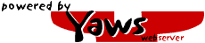

Yaws
Yaws is a HTTP 1.1 webserver currently under rapid development. Two separate modes of operations are supported.- Standalone mode where yaws runs as a regular webserver daemon. This is the default mode.
- Embedded mode wher Yaws runs as an embedded webserver in an another erlang application. This mode is ideal when we want to build a web UI to control an erlang application
Yaws is entirely written in Erlang, futhermore it is a multithreaded webserver where one Erlang light weight processis used to handle each client.
Yaws has excellent capabilies to generate dynamic content. Erlang code can be embedded into the HTML code in manner similar to php. As matter of fact, the ad-hockery of php was one of major reasons I started the Yaws project.
yaws.hyber.org
The homepage of Yaws is yaws.hyber.org The documentation, examples as well as releases can be found there, and of cource, yaws.hyber.org is: Build and install
Yaws is hosted by# export CVS_RSH=ssh # cvs -d:pserver:anonymous@cvs.erlyaws.sourceforge.net:/cvsroot/erlyaws login # cvs -z3 -d:pserver:anonymous@cvs.erlyaws.sourceforge.net:/cvsroot/erlyaws co . # cd yaws; make; make installWill checkout the bleeding edge source, build it and install it.